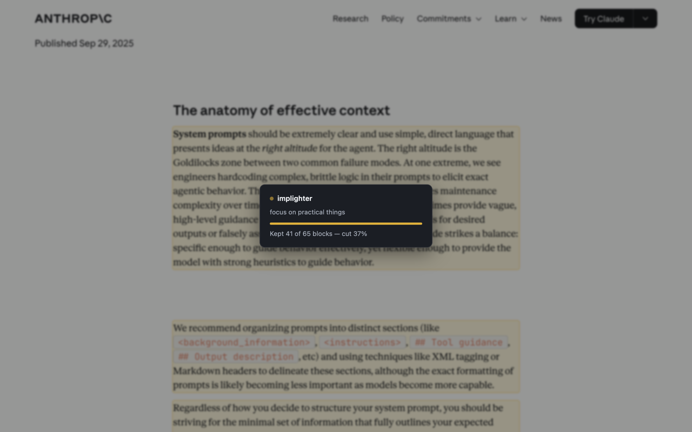
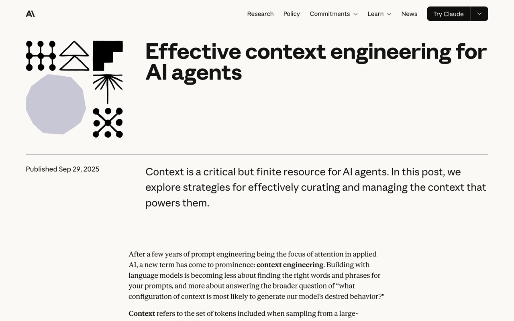
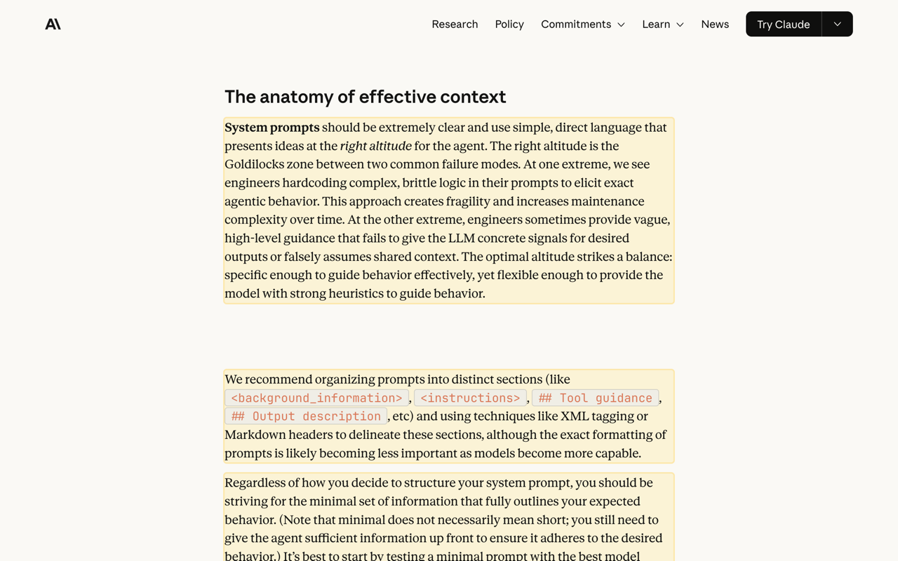
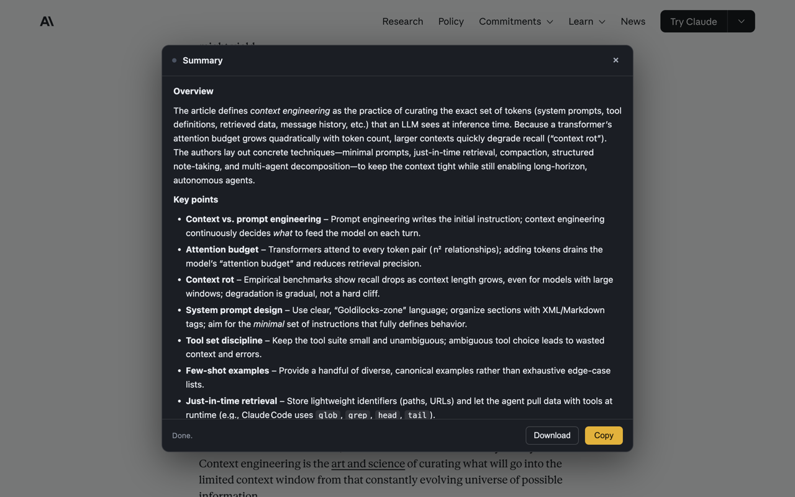
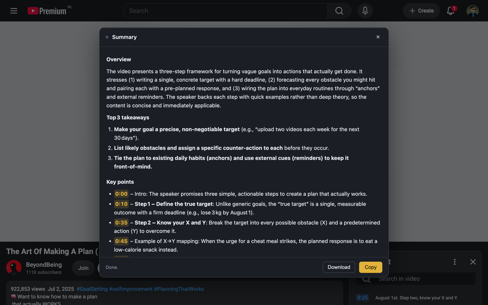

implighter reads the page you're on and highlights the parts that serve your goal — dimming or hiding everything else.
The same article gives different results for a different goal, because relevance depends on what you came for. It isn't a generic "important sentences" highlighter.
Free and open source · MIT licence · Bring your own API key

Same article, same scroll position. Everything that doesn't serve the goal is removed — including the scaffolding around it, like comment threads, signup forms and footers.


An overview, the key points, and anything worth acting on — streamed into a panel you can copy or download as Markdown.

On a YouTube video, implighter reads the transcript through your own session and cites the moment each point is made. Click a timestamp and the player jumps there.

A comment thread loses its usernames, timestamps and Reply links too — not just the comments.
Content loaded by "Show all comments" or infinite scroll gets scored as it arrives.
Copy the kept text as Markdown — a goal-filtered version of the page for your notes.
Right-click any highlighted text to summarize just that, instead of the whole page.
Ctrl/Cmd+Shift+Y to highlight with your last goal, +U to summarize.
Both summary instructions are editable, and the scoring rubric is a readable file in the repo.
There's no server and no subscription. implighter talks directly to an AI provider using your own key, so you pay them for what you use and nothing else — but it does nothing until you add one.
| Provider | Notes |
|---|---|
| Groq | Free tier, no card required. The quickest way to try it. |
| Anthropic | Sharpest results. The default. |
| OpenAI | Supported. |
Nothing runs until you invoke it. There's no content script sitting on every page you visit — the extension injects itself only when you click it, and only into that tab.
No analytics. No telemetry. No account.
Page text goes to the provider you chose and nowhere else. Your key stays in your browser and is never sent anywhere except the provider that issued it.
Full detail in the privacy policy.
Download the release, unzip it, and load it unpacked at chrome://extensions.